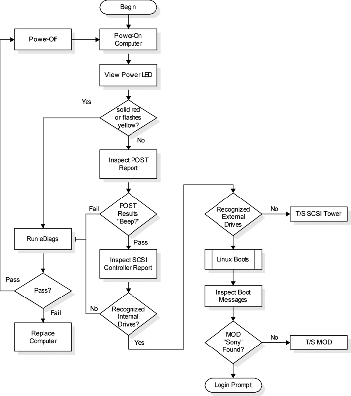
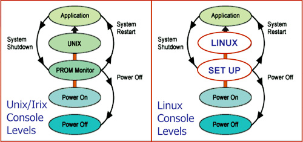

Operating Documentation
Direction 5181166-800, Rev# 7
BrightSpeed Select Service Methods Adv
Operating Documentation |
Illustration 1: Linux Boot-up Flowchart

The following diagram shows that the boot sequence from Unix and Irix has not changed. Only the level definitions and screens change in Linux.
Illustration 2: Levels of Operation

Table 1: Activities and Timings
| Activity | Timing |
| Power up self test begins | 0 seconds |
| HP logo screen appears | 20 seconds |
| Self test summary scrolling text | 50 seconds |
| GE logo screen | 2 minutes |
| Linux loading text | 2-4 minutes |
| Linux level screen | 6 minutes |
| OC initializing | 6.5 minutes |
| Boot-up complete | approx. 10 minutes |